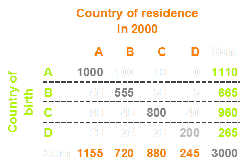
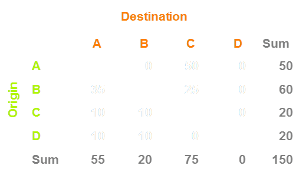

Data visualisation at the nexus of science and the public
Nikola Sander, Guy Abel, Ramon Bauer
& Johannes Schmidt
Wittgenstein Centre, Vienna Institute of Demography;
Null2, Berlin
The Graphical Web Conference, August 2014
Slides: nikolasander.com/graphicalweb
Science communication
& data visualisation
State of science communication
“Scientists must learn to communicate with the public, be willing to do so and indeed consider it their duty to do so.”
Royal Society, 1985
Science communication in the digital era
A late transition from traditional to digital dissemination.
Barriers to communication:
- Scientists don't get paid for doing outreach
- Scientists lack the skills to communicate
Science communication needs a change in attitudes.
From informing to engaging the public
More openness in the research process encourages participation and engagement.
- Open access … to research articles
- Open data … facilitates the re-use of data
- Open source … enables use and development of applications
- Open science … fosters the accessibility of research processes
Data visualisation in science communication
“Visualizations invite people to touch, stroke, and go deeper into the data that underlie them. They engage.”
Michael Schrage, 2013
How does data visualisation encourage engagement?
- attract visually (exploiting visual perception)
- re/present data (allows insights)
- facilitate accessibility & understanding (of research findings)
- amplify cognition (allow user to go deeper into the data & topic)
The problem is …
“Scientists do not seem to distinguish between analysis and communication. The last exploratory graph becomes explanatory.”
What skills do we need to engage visually?
Literacy refers to the ability to read for knowledge, write coherently and think critically about printed material.
- Data literacy … to make use of quantitative information
- Statistical literacy … to make sense of statistical information
- Scientific literacy … to evaluate the quality of scientific information
- Visual literacy … to construct meaning from visual images
- Media literacy … to apply literacy skills to media and technology messages
Ready, willing and able
Preconditions required to adopt a new form of behaviour (Coale, 1973):
- readiness … a new behaviour must be advantageous
- willingness … a new behaviour must be cultural acceptable
- ability … technical or social means for the realisation of new behaviours
Ready, willing and able to engage with the public
Readiness … why researchers should engage
→ change in job description
Willingness … what it brings for researchers to engage
→ change in mind set
Ability … how they can engage visually
→ change in skill set
"Data visualisation is a multi-disciplinary subject"
Andy Kirk, 2012
The Global Flow of People
Common presumption:
Global migration has accelerated and diversified
Problems with data on migration flows
Provided by less than 50 countries.
Differences in the way of measurement.
Harmonised flow data exist only for Europe
Data on migrant stocks
Widely captured in population censuses.
Country of birth != country of current residence.
U.N. released global bilateral dataset in 2013.
Accumulative measure that cannot capture recent trends.
How many people migrated in the world in 2005-10?
Estimating flows from stocks
UN stock datalifetime transitions static snapshot of 1990, 2000, 2010 ~220 countries |
➜ |
Our flow estimates5-year transitions dynamic movements 1990-95 to 2005-10 196 countries |
Migrant stock table, 2000
Estimated flow matrix, 2005-10
No rising tide of migration
About 0.6 % of world population have moved over 5-year periods since 1995.

Quantifying Global International Migration Flows
Guy Abel & Nikola Sander.
Published in Science on 28 March 2014; vol 343: 1520-1522.
Teaming up with coders and designers to create
The Global Flow of People
Coding: Null2 in Berlin
Web design: Elvira Stein in Vienna
Where everyone in the world is migrating http://t.co/goRNOClrFj pic.twitter.com/1b6rI2LW50
— Quartz (@qz) March 28, 2014
Fantastic visualization of global migration data. I'm on there if you zoom in a lot. http://t.co/VeAUPXNrd6
— Pumphrey's Math (@PumphreysMath) April 3, 2014
An eye-opening (beautifully executed) visualization on migration @sciencemagazine http://t.co/l83SbIVzr9 Love that data can be downloaded!
— dukewired (@dukewired) March 30, 2014
Very interesting, pretty, and pretty thought-provoking too... puts the UK tabloids' rants into perspective! http://t.co/9TPJWD63Lc
— Craig Owen (@craigowen1976) March 31, 2014
#SomeoneTellMarineLePen African migrants aren't invading us, and here's the data to prove it http://t.co/njcn66Xsjg pic.twitter.com/Ug4hTcl8V0
— Jacques (@jacksometer) March 31, 2014
Conclusions
Using data visualisation to engage the public works
- Teaming up was essential
- Positive feedback from scientists & the public
How to change a researcher's mind and skill set?
- mind set ... incentives and best practice
- skill set ... education and training
Data visualisation has the potential to bridge the gap between science and the public
"The Global Flow of People"
Interactive data visualisation
circular-world.com
A collection of our circular migration plots
nikola.sander@oeaw.ac.at
@nikolasander
ramon@metropop.eu
@metropop_eu